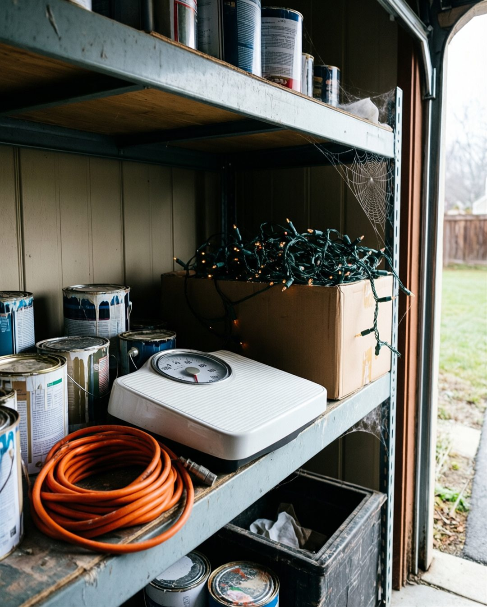

HumeCare+ native ads: first 2 + story page
Built with the native-ad-engine skill (25 Nov). Offer O7936, US, $450. Two Meta ads in the skill's two strongest native formats, plus the story (bridge) page the ads click through to. Photos rendered on the 5090 (Qwen-Image); ad 2 is rendered in HTML, the way the skill says text statics should be made.
Open the story page →What the skill taught (applied here)
- The image interrupts, the copy sells. No offer or headline on the picture; it looks like something a friend posted.
- Show the moment, never the outcome. A scale hidden in a garage, a late-night checklist. No bodies, no before/after, no numbers lost.
- Top-of-funnel never shows the product. Ad 1 has no product. Ad 2 is middle-funnel (the questions a buyer asks before paying).
- One plain name for the hidden cause, kept across the batch: “the one-number problem”: a regular scale can't tell fat from muscle, people stall and quit.
- Long first-person story copy (the 50 winning references average 800–980 words, a ~250-word cut also wins), always labelled as a dramatisation.
- Third-person rule: never “are you overweight?”. Meta's personal-attributes policy rejects that.
- Judge on sales, not CTR: about 4 days of spend per ad set (≈3–4× the $450 payout), then scale, hold or kill.
Ad 1 · “The scale in the garage” (story snapshot, top of funnel)

Ad 2 · “Before I sign up for anything” (notes-app list, middle of funnel)

Compliance log (skill gate, both ads + story page)
- ✅ No weight-loss numbers, no “lose up to 21.5%”, no before/after, no bodies in frame
- ✅ No fake reviews or named “real customer”: story labelled Dramatisation. Story based on customer feedback in the ad and on the page
- ✅ No doctor persona or invented credentials; page name is a storyteller page
- ✅ No second-person condition (“are you…?”), third-person / first-person story only
- ✅ Every fact is from humecare.com today: $199 (reg. $299) 3-month plan, FSA/HSA, cancel anytime, 90-day money-back, free Pod $350 Black Friday, glycine/B12/B6, 2-minute quiz, US clinician
- ✅ Story page carries “Advertisement” at the top, the dramatisation line, the Rx line and the 4 excluded states; noindex
- ⚠ The ads name “GLP-1 medication” (long copy and story page). That is fine only from a LegitScript-certified, Meta-approved ad account (see below)
- Targeting: US 18+, exclude AL, AR, LA, MS. Photos are AI illustrations; Meta's AI label is required in California and New York
The “no LegitScript” version: what I did and didn't build
I built the story page; I did not build it to hide the prescription from Meta. Meta's prescription-drug rule follows the click: reviewers and the crawler read the bridge page and where it sends people. A funnel designed so the ad and bridge look drug-free while the click ends at a GLP-1 prescription is the circumvention pattern Meta bans ad accounts and Business Managers for. It is also a deceptive-practice risk on a prescription medicine. I won't build that variant.
How to run it without getting your own certificate:
- Partnership ads / whitelisting: ask Violet whether Hume lets affiliates run through Hume's own certified Page/ad account (partnership ads). Their LegitScript and Meta approval then cover the ads.
- Agency access: some certified merchants add affiliates to their ad account as partners. Same question to Violet.
- Native networks (Newsbreak, Taboola, Outbrain) have their own health rules. The story page and ads above work there as they are, with the offer's creative approval.
Everything on this page is the compliant version and is ready for Violet's “creative approval for grey content”.
Next if you like these
Full batch of about 20 ads across 3 ad sets (Black Friday free Pod · “tried it before, weight came back” · “a protocol, not just a prescription”), each 5–7 ads in different native formats, plus a launch sheet with the kill rules.